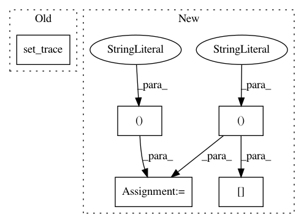

33dcc8554a6a187ee33762b1e572a252aa65e698,test/test_depth_warper.py,Tester,test_depth_warper,#Tester#,12
Before Change
// generate synthetic inverse depth
inv_depth_src = torch.ones(batch_size, 1, height, width)
import pdb;pdb.set_trace()
patch_dst = warper(inv_depth_src, patch_src)
pass
After Change
patch_dst = warper(inv_depth_src, patch_src)
// compute error
res = utils.check_equal_torch( \
patch_src[..., :-int(offset), :-int(offset)], \
patch_dst[..., int(offset):, int(offset):])
self.assertTrue(res)
pass
In pattern: SUPERPATTERN
Frequency: 3
Non-data size: 5
Instances
Project Name: arraiy/torchgeometry
Commit Name: 33dcc8554a6a187ee33762b1e572a252aa65e698
Time: 2018-09-26
Author: edgar.riba@gmail.com
File Name: test/test_depth_warper.py
Class Name: Tester
Method Name: test_depth_warper
Project Name: jsalt18-sentence-repl/jiant
Commit Name: 688aa83baf45b285cbdace7cf641da91a111c5ad
Time: 2018-06-24
Author: wang.alex.c@gmail.com
File Name: src/models.py
Class Name: MultiTaskModel
Method Name: _lm_forward
Project Name: kbardool/keras-frcnn
Commit Name: c6e4eaf7ad9a27a9c91d29f02048b1e6b1a8b657
Time: 2017-02-13
Author: yannhenon@gmail.com
File Name: keras_frcnn/data_generators.py
Class Name:
Method Name: calcY